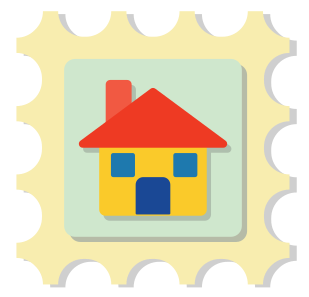
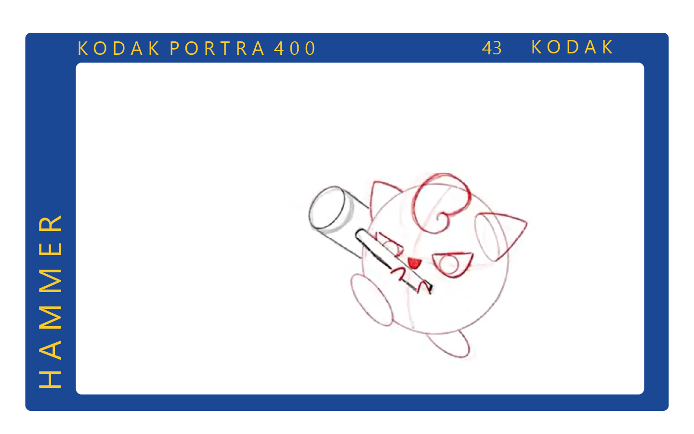
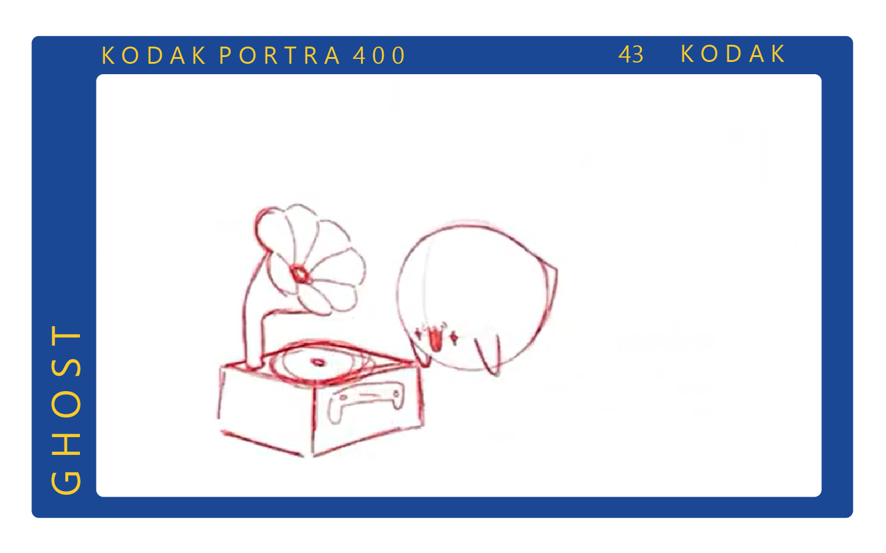

Durante la universidad, he desarrollado mis habilidades en animación 2D aplicando los siguientes elementos: 12 principios de la animación, gravedad, expresiones faciales, y lip sync.




Puedes ver el Demo Reel completo aquí!
Para este proyecto de fotografía, exploré el tema de inseguridades físicas y su impacto en el día a día. Combiné personas con objetos cotidianos y utilicé colores y fondos surreales para añadir un tono con humor a un tema sensible.